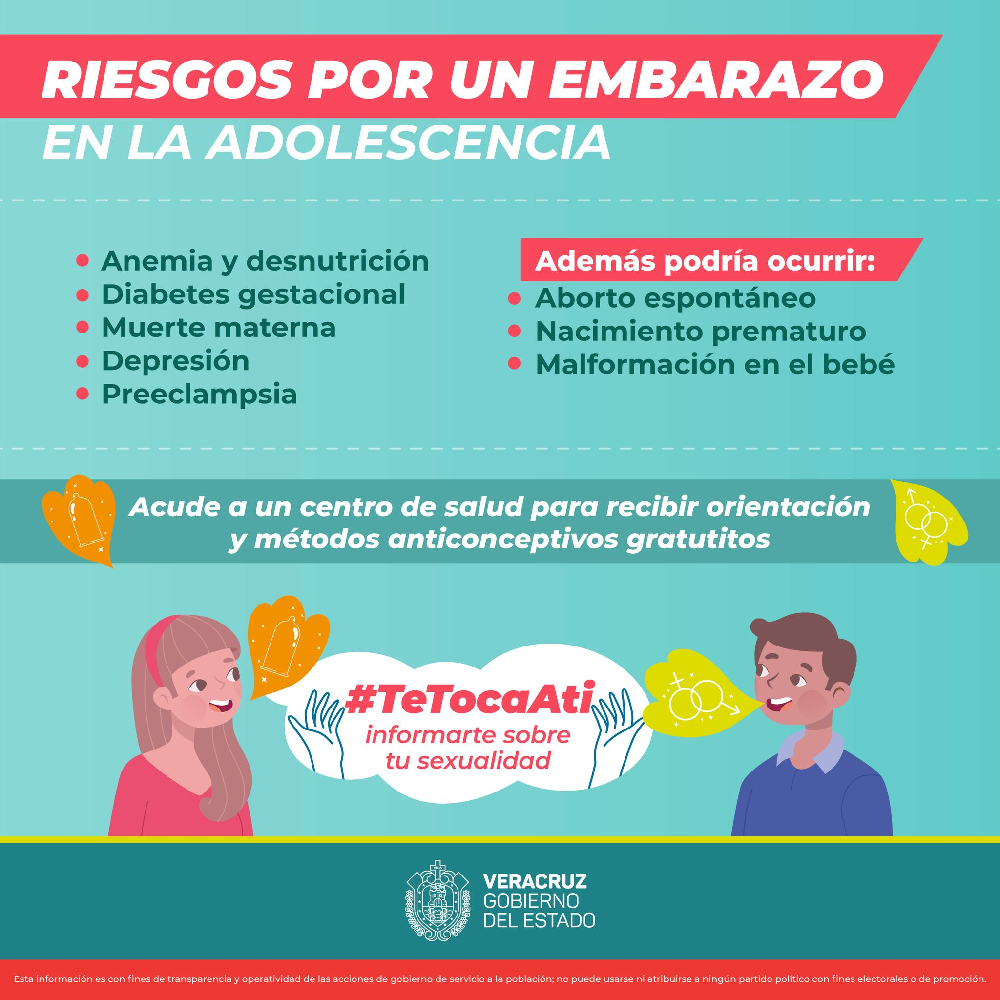

El embarazo adolescente o embarazo precoz es aquel que se produce en una mujer adolescente, entre la adolescencia inicial o pubertad comienzo de la edad fértil y el final de la adolescencia. La Organización Mundial de la Salud define la adolescencia entre los 10 y los 19 años
Click aqui para volver al índice
Causas y consecuencias
Mayor riesgo de complicaciones en el embarazo: Puede haber parto prematuro, preeclampsia, anemia, entre otras. Mayor riesgo de abandono escolar: Las adolescentes que se quedan embarazadas pueden tener dificultades para seguir con sus estudios y terminar su educación. Dificultades financieras: Es posible que no tengan un trabajo estable y deban cubrir los gastos asociados con el cuidado del bebé. Cambios emocionales y sociales: El embarazo puede tener un impacto significativo en la vida de una adolescente, afectando su autoestima, la relación con sus amigos y familiares, y su perspectiva de futuro. Mayor riesgo de tener más hijos antes de tiempo: Las adolescentes que tienen un hijo a temprana edad pueden tener un mayor riesgo de tener más hijos antes de tiempo, lo que puede afectar aún más su educación y su capacidad para cuidar a sus hijos.
Click aqui para volver al índice
¿Como prevenir el embarazo?
Algunas formas de prevenir el embarazo en la adolescencia son : Educación sexual: Es importante que los adolescentes reciban una educación sexual completa y adecuada, que incluya información sobre la anticoncepción y la prevención de enfermedades de transmisión sexual. Acceso a métodos anticonceptivos: Es importante que los adolescentes tengan acceso a una variedad de métodos anticonceptivos y estos deben estar disponibles de manera accesible y confidencial. Promover la comunicación abierta: Los padres y los cuidadores deben fomentar la comunicación abierta con los adolescentes sobre la sexualidad y la prevención del embarazo. Reforzar la autoestima y la toma de decisiones saludables: Los adolescentes deben ser alentados a tomar decisiones saludables y a tener una buena autoestima para evitar situaciones de presión social. Fomentar el respeto y la igualdad: Es importante que se fomente el respeto y la igualdad entre los sexos para reducir la presión social y el acoso sexua
Click aqui para volver al índice
Conclusiones
La prevención del embarazo a temprana edad es crucial para garantizar el bienestar físico, emocional y social de las adolescentes.